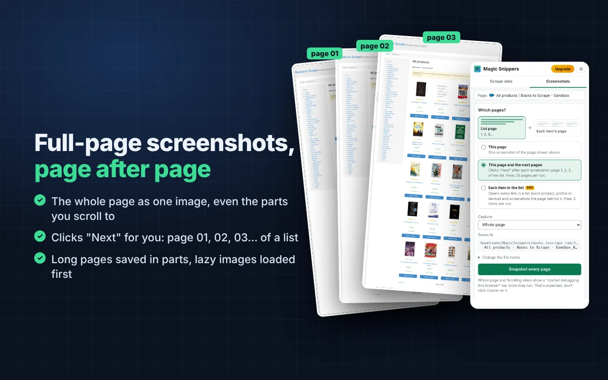
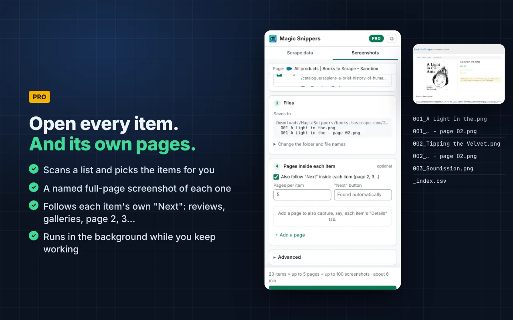
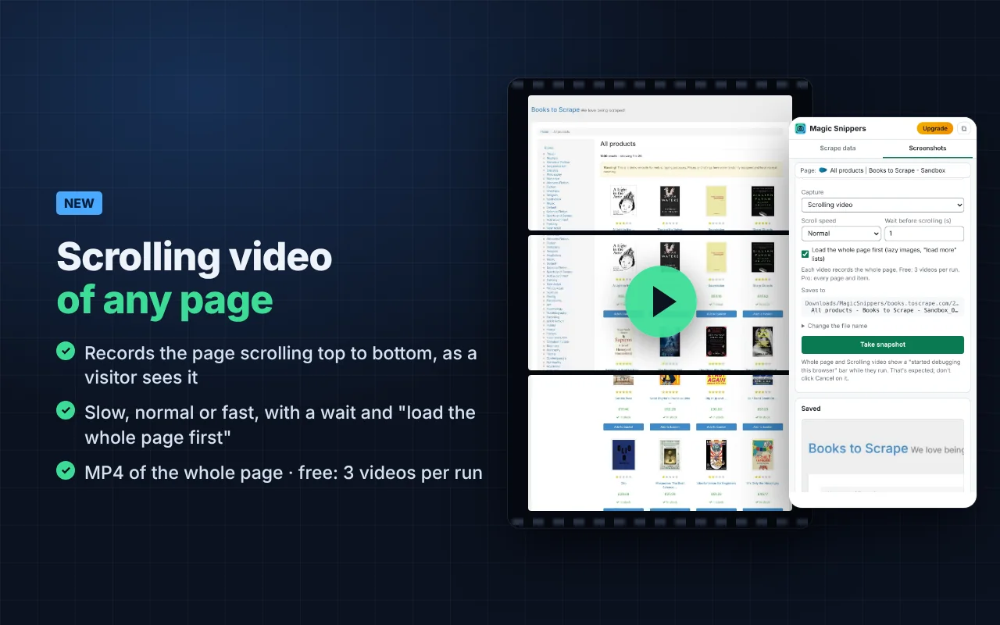

Chrome extension From the makers of Magic Scraper
Every page. Every item. Captured inside your login.
Most full page screenshot tools capture the page you're looking at. Magic Snippers finds the pages for you: it clicks Next through a list and saves every page, or opens every product, profile or listing in it and saves a named full page screenshot of each, with a spreadsheet listing them all. It runs in your own Chrome, so pages behind your login work, and nothing is uploaded.

Choose which pages
One side panel that stays open beside the page. Everything it makes lands in your Downloads folder, named and filed by website and date.
This page free
A full page screenshot of the entire page, not just what fits on screen — including scrolling panels inside web apps, which ordinary full page tools cut off. Lazy-loaded images are loaded first, and very long pages are saved in parts rather than cut short.
Every page of a list 25 pages per run free · every page with Pro
Screenshot all pages of a list without touching the mouse: it finds the Next button, clicks it after each screenshot, and saves page 1, 2, 3… numbered in order. Stop whenever you like, or let it run to the last page.
Every item in a list 3 items per run free · every item with Pro
Scans the page and picks the main list for you — the products, not the menu
— then opens each item and saves a named full page screenshot of it. It can follow
each item's own Next pages too, or open a Details or Reviews tab.
Progress, time left, pause, retry, and an _index.csv of every page and file.

Inside your login, on your computer
Online screenshot services can only see a page behind your login if you hand them your session cookies. Magic Snippers doesn't need them: it works in the browser you're already signed in to, so dashboards, admin panels, member areas and client portals are captured exactly as you see them.
Nothing is uploaded. There are no Magic Snippers servers, accounts or tracking; the only thing that leaves your computer is a Pro licence key, checked with Gumroad. And it keeps out of your way: screenshots are taken in a background tab and videos in a separate window, so you can carry on working.
As pictures, as a video, or as data
Whole page
One long image per page, for every page and every item in the run.
Scrolling video 3 videos per run free
Records the page scrolling from top to bottom, the way a visitor sees it, with animations playing. Slow, normal or fast, with a wait and an option to load the whole page first.
PDFs too
Open a PDF in Chrome and save all its pages as one image, or as a scrolling video through every page. Try it on a five-page story.
Scrape data free
Finds the tables and lists on the page, follows Next for more rows, and exports a CSV, JSON, or a table you can paste into Excel or Google Sheets.

What it's for
Agencies and designers: a full page screenshot of every page of a site, for an audit, a redesign or client sign-off. QA and product teams: every page of an app you're signed in to, as images or scrolling videos.
Research: product pages, listings and competitor pages saved as pictures, with the data beside them. Backups: hundreds of pages kept before a migration, a redesign or an account closure — the job it was first built for was keeping a copy of every device page in a network dashboard before moving to a new one.
Magic Scraper or Magic Snippers?
They are separate extensions, and work well side by side.
| Magic Scraper | Magic Snippers | |
|---|---|---|
| What you come away with | Rows and columns | Pictures and videos of pages, plus CSV export |
| The page behind every row | Opened, and its fields added as extra columns | Opened, and saved as a full page screenshot |
| Every page of a list | Next, infinite scroll, Load more | Next, saved as numbered screenshots |
| Whole-page screenshots and scrolling videos | No | Yes |
| Exports | CSV, XLSX, JSON, Google Sheets | PNG, MP4; CSV, JSON, copy for Excel |
| Price | Free; Pro is one-time | Free; Pro is $19 once |
If what you need is the data, Magic Scraper is the better tool. If you need to show what the pages looked like, this is.
Free, and Pro once
The free version isn't a trial. Pro removes the limits per run, and it's yours permanently.
Free
$0
No clock on it.
- Full page screenshots of any page, and PDFs
- Every page of a list: 25 pages per run
- Every item in a list: 3 items per run
- Scrolling videos: 3 per run
- Scrape data to CSV · JSON, or copy for Excel
Pro
$19
Paid once, through Gumroad. A licence key for the free extension.
- Everything in Free
- Every page, every item and every video, in one run
- Updates to version 2 carry across
- 7-day refund, no questions asked
Reasonable questions
Does it work on sites I'm signed in to?
Yes — that's the point of running in your own browser. It sees exactly what you see, with your own session, and nothing about it is sent anywhere. It can't open Chrome's own pages, the Chrome Web Store or a new tab; Chrome blocks every extension there.
Why does Chrome say it “started debugging this browser”?
Chrome shows that bar whenever an extension uses its debugging interface, and it can't be hidden. It's the only way an extension can make a tab as tall as the whole page to photograph it in one go, or record the page as it scrolls. Magic Snippers attaches to the one tab being captured, only while it captures, and detaches when it's done. Pressing Cancel on the bar stops the capture; nothing else happens.
Why does it ask for these permissions?
Reading the tab you click the icon on: to find the data, the links and the Next button; other sites need your OK, site by site. Debugger: whole-page screenshots and videos, as above. Tabs: to show which page it's working on and name each item's file; it doesn't read your history. Scripting: to run its own code in the page; none is fetched from the internet. Downloads: to save your files. Storage: your settings and licence key. Side panel: to stay open beside the page. The ⓘ button in the panel says the same. The privacy policy, in full.
Does it send my data anywhere?
No. What it reads and saves stays in your browser and your Downloads folder. The only thing that leaves your computer is a Pro licence key, which is checked with Gumroad.
Can I keep working while it captures?
Yes. Screenshots are taken in a background tab and videos in a separate window. You can also pop the panel out (⧉) into its own window and put it anywhere.
Is my Magic Scraper licence valid here?
No — they are separate products with separate licences. Each has a free version that does most of the job, so you can find out which one you need before paying.
How do I activate Pro?
Open the Magic Snippers panel, click Upgrade, paste the licence key from your Gumroad receipt and click Activate. It works on any browser you personally use.